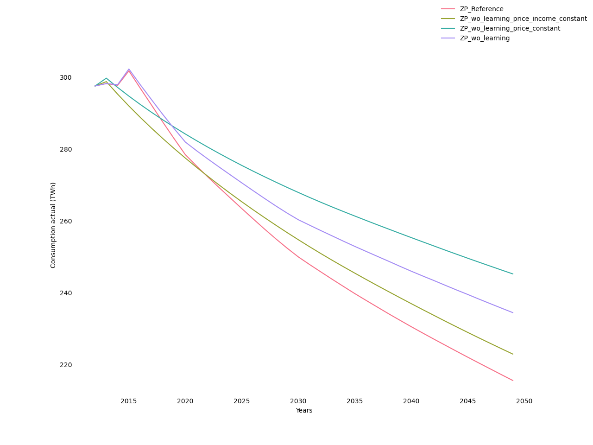
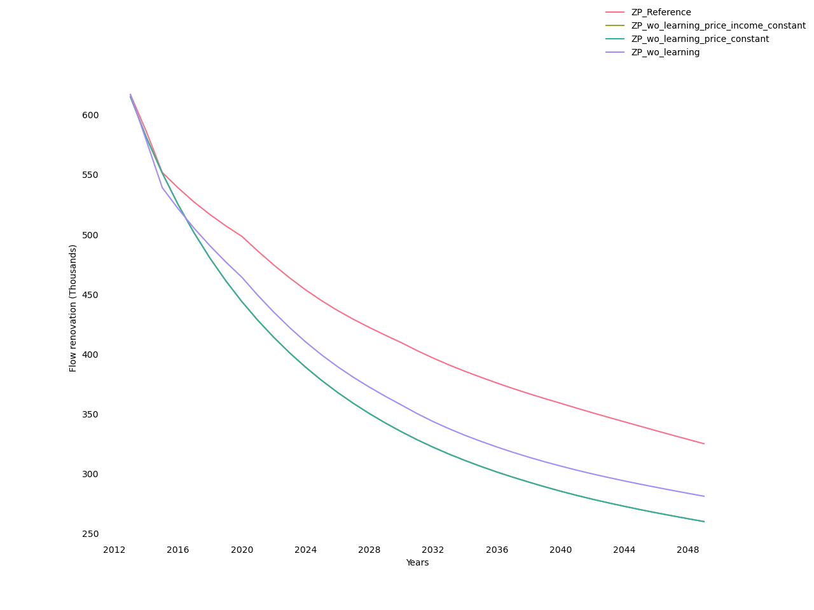
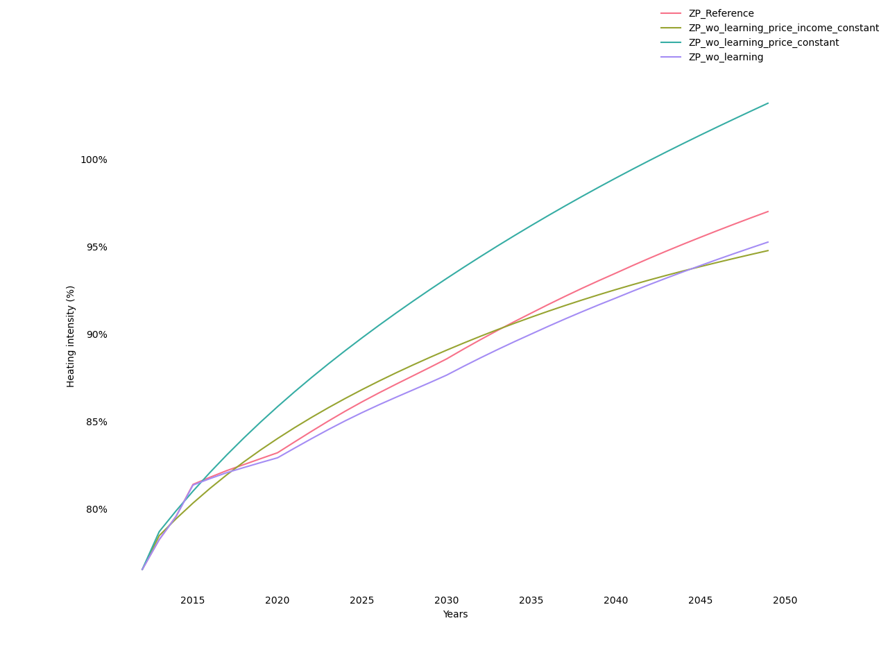
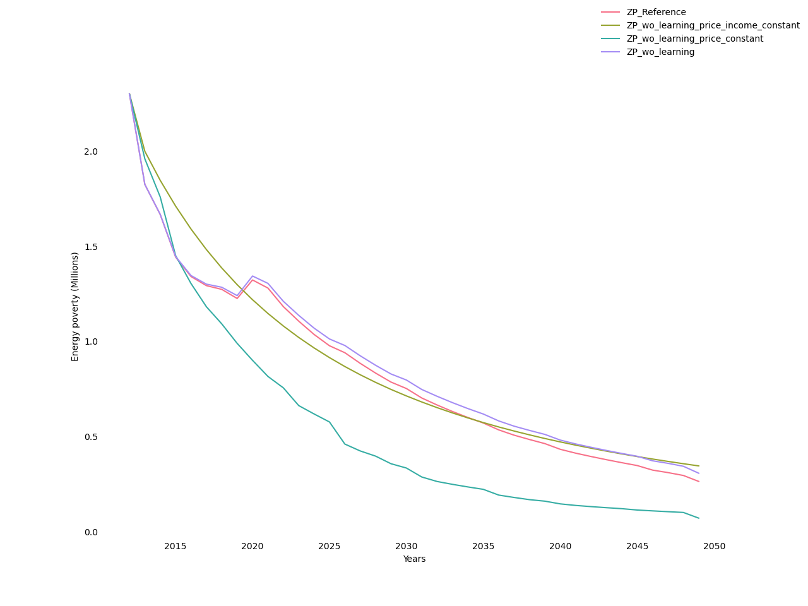

Variants on the input variables¶
The influence of technological progress, energy prices and aggregate household income is assessed by comparing the reference scenario to alternatives in which they are frozen one after the other.1
Scenarios specification
Scenario |
Endogenous techological change |
Energy prices |
Revenu des ménages |
|---|---|---|---|
Reference |
Learning rate of 15% for new construction and 10% for renovation |
ADEME scenario |
Growth rate of 1,2% p.a. |
No technological change |
Frozen. Learning rates set to zero. |
||
No technological change, frozen price |
Frozen |
||
No technological change, frozen price and income |
Frozen |
Figure illustrates the resulting effect on the aggregate final energy consumption for heating, the main output of the model. It shows that energy consumption decreases autonomously from 15% to 30%, depending on the scenarios considered, between 2012 and 2050. Freezing technological progress increases energy consumption by 12% in 2050 relative to the reference scenario. Additionally, freezing energy prices further increases energy consumption by 20%. Lastly, freezing income decreases energy consumption by another 15%.
Evolution of final actual energy consumption 
Figures 17 and 18 illustrate effects on the intensive and extensive margin of renovation. Figure 17 shows that freezing technological progress significantly reduces the annual flow of renovations. Additionally freezing energy prices reinforces this effect, while freezing income has no additional effect. The declining trend observed in the all-frozen scenario illustrates the depletion of the potential for profitable renovations as a result of past renovations. The comparison with the other scenarios shows that technological progress and, to a lesser extent, increasing energy prices are augmenting this potential. Figure 18 shows that the scenarios with the highest number of renovations generate fewer numbers in the low-efficiency labels (G to C) and more in high-efficiency ones (B and A).
Renovation flows 
Evolution of energy performance

The aggregate heating intensity decreases with the theoretical budget share dedicated to heating (Figure 19), which in turn decreases with the energy performance of the dwelling, decreases with household income and increases with the price of energy. The effect of the energy price on this quantity is ambiguous since, in addition to the direct effect just mentioned, there is the indirect effect discussed in the previous paragraph that the energy price stimulates renovations. The fact that the curve with non-frozen energy prices crosses that with frozen energy prices (both with frozen technological change) suggests that the direct effect dominates in the short term while the indirect effect dominates in the long term. The comparison of the first two scenarios indicates that freezing technological change reduces heating intensity, an effect due, as we have seen previously, to a lesser improvement in energy efficiency. Finally, the comparison of the last two scenarios illustrates the positive effect of income growth on heating intensity. It is important to note that, at the same time, the growth in aggregate income increases the surface area of dwellings to be heated.
Evolution of heating intensity 
To sum up:
The reduction in energy consumption is to a large extent autonomous, that is, important even when all key drivers are frozen;
The rise in energy prices stimulates renovation and reduces intensity of heating; the former effect tends to take over the latter in the long term;
Technological progress has a pure effect of improving energy efficiency;
Income growth increases energy consumption by increasing both the area to be heated and the intensity of heating.
Figure 20 displays the evolution of the share of dwellings in fuel poverty, as measured by the income-to-price ratio that counts the households spending more than 10% of their income on heating. It shows that, when all key drivers are frozen, this count consistently declines. The increase in income naturally accelerates this trend, while the increase in energy prices does the opposite. In comparison, technological change has a modest effect on reducing fuel poverty.
Number of households dedicating over 10% of their income to heating 
- 1
Changing the order in which the variables are frozen has little impact, which suggests that non-linearities are not too important in the model.